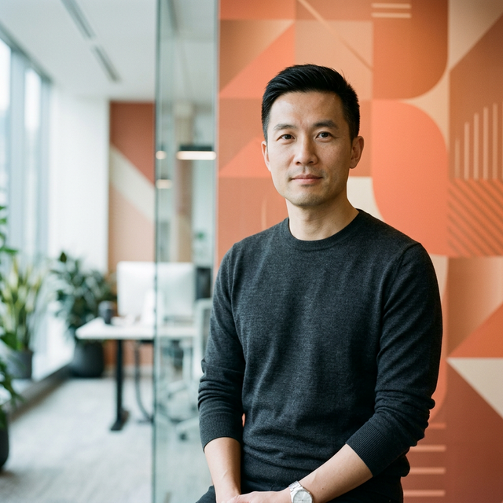

[ PROFILE_011 · REVERSE THINKER ]

黄峥
拼多多创始人 · 反向思考者
用更公平的效率，重新分配商品和信任
1980 — · 杭州
他的经历
他的问题
❓ 怎么用"更公平的效率"，重新分配商品和信任？
- → 所有事的本质都在降低"获客、交易、物流、信任"的社会成本，让弱势端也能进场
- → 拼多多不是"便宜电商"，而是把流量、供应链、生产端重新配置，让边缘人群获得选择权
- → 频繁谈"资本主义倒过来""错位竞争""消费侧更计划经济、生产侧更市场化"
- → 每一步都在找"让普通人用得起、商家活得下去、系统还能赚钱"的平衡点
- → 反复强调"信任"和"队伍的信用额度"——效率提升最终要落在可信的长期合作上
我的分析
🏷️ 一个词概括
反向思考
💰 他的投资品味
增长不一定快，但很抗周期。不需要讲故事就能赚钱。
🔐 信任哲学
"校友们"是黄峥最信赖的群体，高管团队基本来自其学生时代。"信任"是拼多多人才梯队流动的准则之一。
三三原则：一个人能干好三个人的工作，获得三个主管的好评。
信用卡原则：每个人都像信用卡一样有初始额度，想积累额度就需要长期履约。如果在黄峥认为关键的事情中出现一次失误，额度就会被清零。
他未必是一个坏的人，但他未必是适合做哪件事的人，也未必是在那个场景下值得信任的人。你不能够坦然面对这个残酷的现实，会对自己带来痛苦，对对方也会带来痛苦。 — 黄峥专访：「曾信了不该信的人」
🧩 为什么他如此割裂？
拼多多业务的增长和组织建设的封闭看似很矛盾——对外极致效率驱动，对内高度封闭、信任门槛极高。
这不是矛盾，而是同一个逻辑的两面：只有足够信任的内核，才能支撑无限扩张的外壳。
极客公园专访精选
2019年1月 · 张鹏 × 黄峥
拼多多一开始就是在读大学？
黄峥
我们始终觉得创业也应该是有一个逐渐进阶的过程。既然读书是读了小学、中学又读大学，那创业也应该这样。拼多多看起来很快，但核心团队在一起十年了——我们以前读了小学又读了中学，现在才开始上大学。
拼多多是做什么的？一个针对下沉人群的东西？
黄峥
没有人是会主动消费降级的，大家都是没有抽水马桶就要有抽水马桶。同一个人有不同的面——我妈肯定算有钱的妈妈了，她买菜买纸巾在乎一两块钱差异，但同时买高配
iPhone。如果你是她儿子观察她的行为觉得很正常，但放到一篇文章里读，好像这个人是分裂的——其实这在千千万万家庭里每天都在发生。
我们到底该怎么理解拼多多？
黄峥
大部分人认为"拼"是一种营销方式、获取流量的方式。但我们从一开始就觉得这是一种新的交互方式，从需求侧的交互改变推进到后端组织方式改变的切入点。表面看前端形式特别简单，简单到所有人都觉得可以很快做一个一模一样的，但最关键的是后端运营——什么时候迭代匹配算法，什么时候往纵深推进。
你的成长历程是怎样的？
黄峥
小时候谈不上贫穷但也不富裕。印象很深的是经常穿妈妈同事或亲戚家小孩的旧衣服。我脑子里一直记着的是我爸妈这样的普通家庭——我妈到现在都舍不得打车，说坐公交车空气好。这对我做商业一直有很大影响，我更能够深刻感受到真实世界的多面性。
工厂和品牌之间的价值分配？
黄峥
东西都是中国人生产的，工厂也是那个工厂，但主要的钱不是他赚的——赚钱的品牌商以前很多还是外资，获得的信任度也更高，其实他什么也不生产。从价值曲线角度讲，分配是有点不对的。现在通过移动互联网，工厂和人可以直接见面了，它有可能用新方式促进生成出不一样的新时代品牌。
做好自己该做的事情？
黄峥
我们都是时代的产物，形势比人强。大的环境下我们正好在这个地方，尽到自己的本分做该做的事情。但有一点必须很清楚：再怎么样，我们在整个时代的长河中，都是非常非常非常渺小的。
做好自己该做的事情，剩下的真的是看命了。